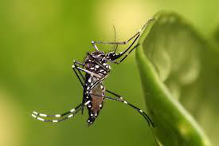

Mais de mil pessoas morreram de dengue no Brasil em 2023
Proteja-se da dengue e cuide do bem-estar de toda a sua comunidade!
Ler mais1. Imersão
No Brasil, o aumento dos casos de dengue tem sido uma preocupação constante para autoridades de saúde e a população em geral. Atualmente, o país enfrenta surtos dessa doença transmitida principalmente pelo mosquito Aedes aegypti, e os desafios para controlá-la persistem. Vários fatores contribuem para o aumento dos casos de dengue.

As condições climáticas favoráveis, como altas temperaturas e chuvas intensas, proporcionam o ambiente ideal para a proliferação do mosquito vetor. Além disso, a urbanização desordenada e a falta de saneamento básico em muitas regiões favorecem o acúmulo de água parada, criando locais propícios para a reprodução do mosquito.
Para muitos pacientes, a dengue pode resultar em complicações graves, como a dengue grave, também conhecida como dengue hemorrágica, que pode levar à morte se não for tratada adequadamente e rapidamente. Isso coloca uma pressão adicional sobre os sistemas de saúde, especialmente em áreas com recursos limitados.
Além do impacto direto na saúde das pessoas infectadas, a dengue também representa um outro fator significativo para os sistemas de saúde e para a economia como um todo. O aumento dos casos sobrecarrega os serviços de saúde, levando a uma maior demanda por atendimento médico, internações hospitalares e recursos para tratamento.
Foram feitas pesquisas, e foi visto que somente no início do ano já existiam quase 10 vezes mais casos de dengue registrados em 2024, do que nesse mesmo período em 2023. E esse aumento foi em todos os estados, por exemplo, em São Paulo os casos de dengue aumentaram quase 30%, e esses valores são preocupantes, pois se a dengue não for combatida logo, pode até gerar mais casos de morte no país, que já conta com um pouco mais de 390 mil casos e 50 mortes causadas por ela.
2. Pesquisas de Campo
Foram feitas algumas perguntas sobre os aumentos dos casos de dengue para um agente de endemias que trabalha na cidade de Russas, e ele comentou que os casos até o mês de março aumentaram consideravelmente em relação aos outros anos. Ele também comentou que é difícil combater a dengue com total eficiência por conta também dos períodos chuvosos, que faz com que gere muitos acúmulos de águas paradas distribuídas pela cidade.
Ele também afirmou que com esse aumento grande de casos repentinamente é complicado para o setor da saúde, pois mesmo que exista o alerta sobre a dengue e as águas paradas, sempre vai existir pessoas que intencionalmente ou não acabam deixando acumular e com isso criando um possível foco da dengue. Foi visto também que o hospital e a UPA em alguns dias da semana é possível encontrar diversas pessoas com casos de suspeita de dengue, e isso é muito preocupante, pois nem sempre é possível atender essa demanda de forma rápida e eficiente, e a longa espera para o atendimento pode agravar alguns casos.
3. Ideação
- 1 - Utilização de dados de fontes comuns ao público geral: Os dados utilizados na página devem ser oriundos de fontes que apresentem dados verídicos e que o público geral conheça.
- 2 - Integração de gráficos: Utilizar gráficos para exibir dados como: número de infectados, mortos e crescimento do número de vítimas e/ou infectados ao longo dos anos.
- 3 - Utilizar diferentes formatos para ajudar o leitor a se prevenir: Utilizar texto e vídeos do YouTube na página que contenham instruções do que se fazer para evitar a proliferação do mosquito da dengue.
- 4 - Listar os sintomas que a dengue causa: Listar por meio de tabelas os sintomas da dengue como uma forma de avisar os riscos que a doença pode oferecer.
- 5 - Engajamento de escolas: Incorporar educação sobre prevenção da dengue no currículo escolar e envolver os alunos em atividades práticas, como campanhas de limpeza de escolas e arredores.